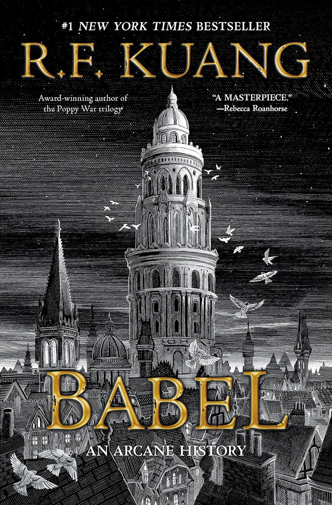

In Katabasis, acclaimed author R.F. Kuang presents a dark academia fantasy that intertwines elements of mythology, academic rivalry, and an extraordinary journey into the underworld. The narrative centers on two graduate students from Cambridge University who, despite their intense rivalry, must collaborate to rescue their advisor's soul from Hell. Their descent into this perilous realm challenges not only their scholarly prowess but also their resilience and mutual trust.
Drawing inspiration from classical works like Dante's Inferno and Susanna Clarke's Piranesi, Kuang crafts a tale that delves into the complexities of ambition, loyalty, and the human spirit. As the protagonists navigate the treacherous landscapes of the underworld, they confront both external dangers and internal conflicts, leading to profound personal transformations.
Scheduled for release on August 26, 2025, Katabasis promises to be a compelling addition to Kuang's repertoire, offering readers a blend of suspense, introspection, and mythological intrigue. This novel is poised to captivate those who appreciate richly layered narratives and the exploration of the human condition in fantastical settings.
R.F. Kuang has been a major inspiration to me from the moment I discovered her books. Starting The Poppy War trilogy without any knowledge of who she was, or the heavy topics that the books shed light on, it was an experience that I could never have imagined. Kuang does not shy away from difficult topics, her books have tackled topics such as racism, colonialism, war, and more, which is to be expected from books based on real world historical events. Entering into the publishing industry at a young age, having written her first book at just 19 years old, and having it published at just 22 years old, Kuang is an inspiration as she demonstrates that you can achieve greatness even early in your career.
Kuang's education is an achievement on its own, studying at not one, but three prestigious universities, being Cambridge, Oxford, and now Yale. Her academic background, specifically in the roots of linguistics and Chinese history is reflected most of all in her novel, Babel. Not only are her books based on real world historical events, but they can also challenge readers to think critically about real-world issues, creating an impact that is both emotionally powerful and intellectual. Prior to reading R.F. Kuang's work, I had no idea of the incredible connection between linguistics and real world historical events. Her books introduced me to new kinds of literature and have recently become some of my favourite books of all time.